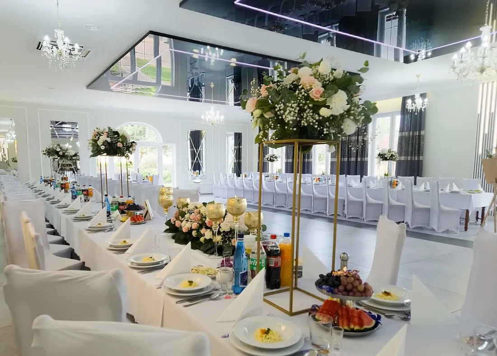
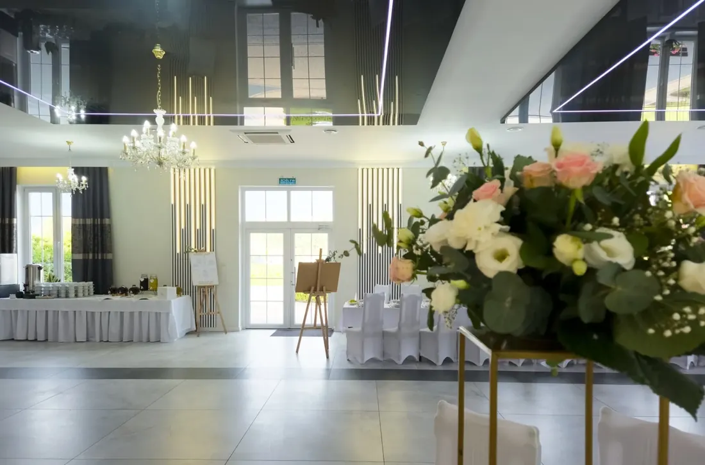
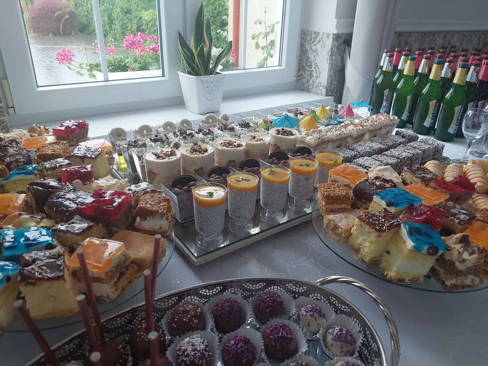
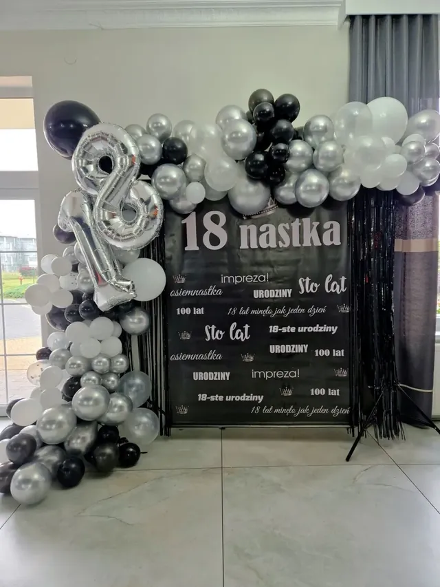
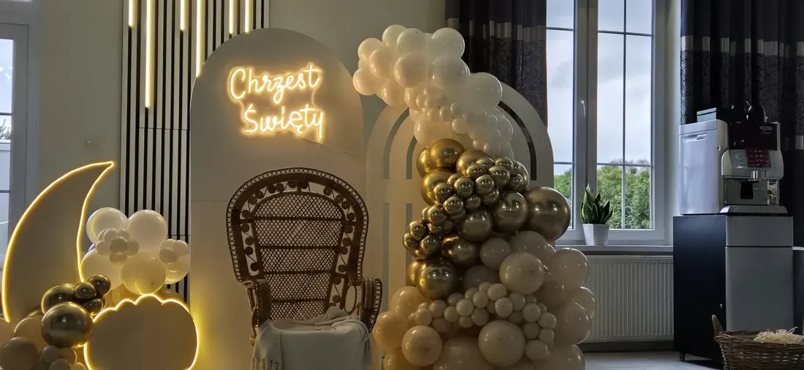
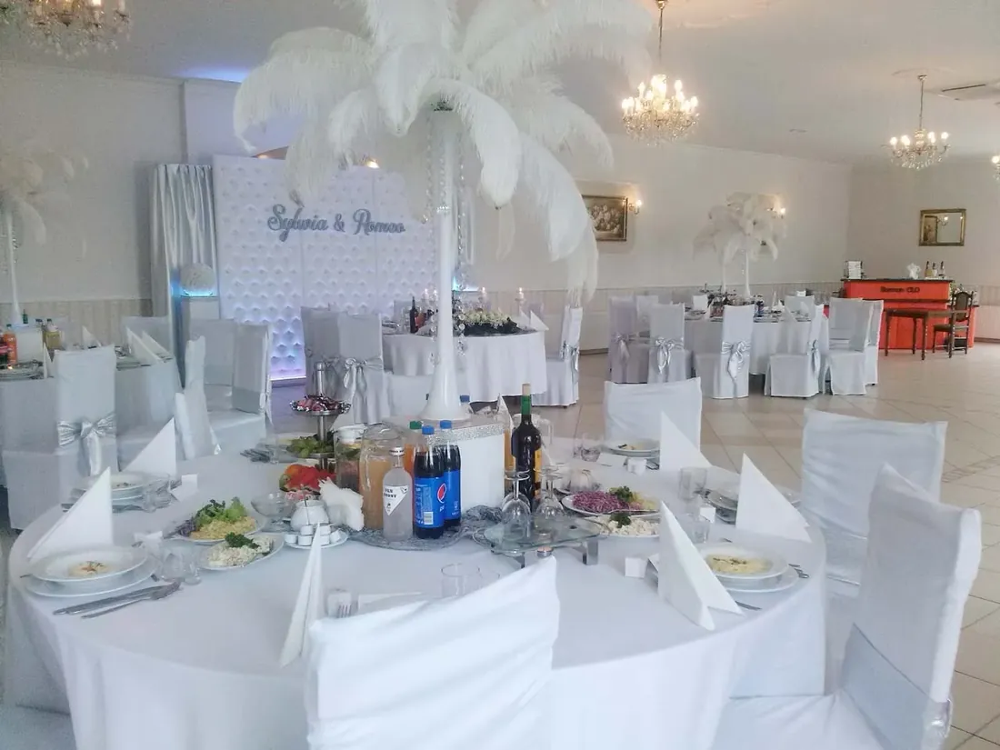
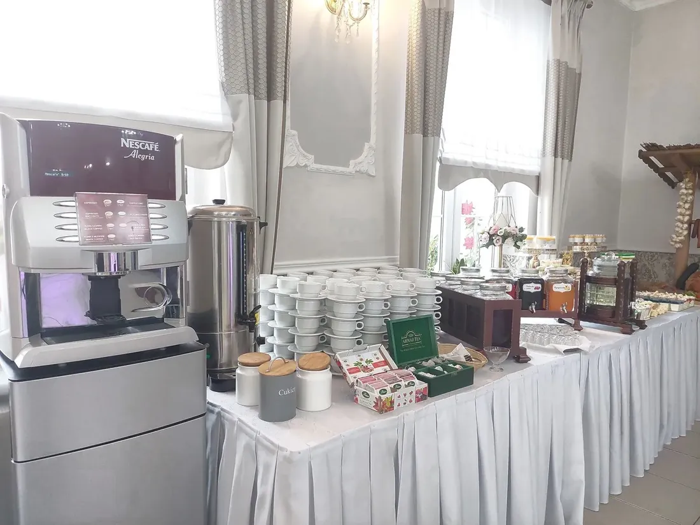
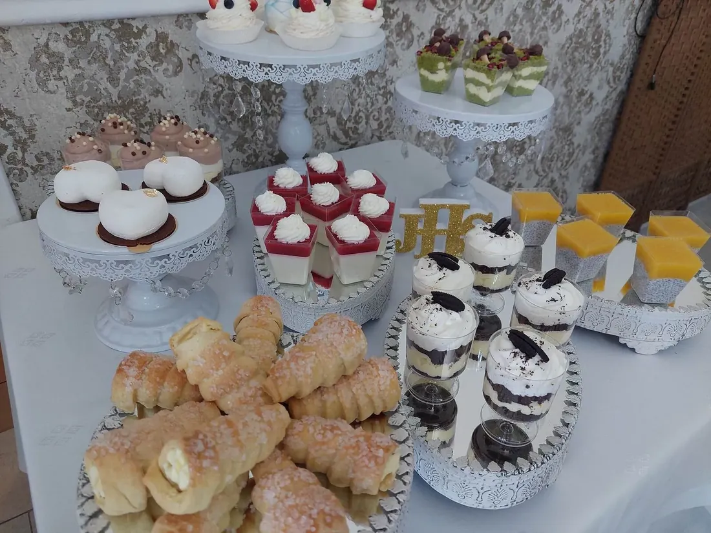
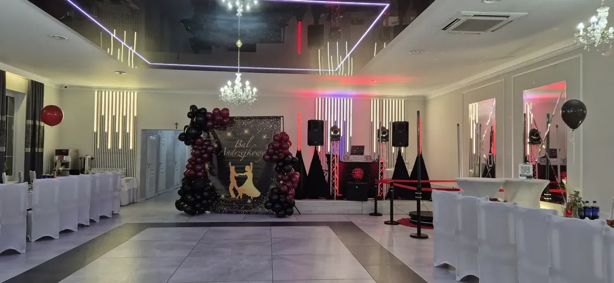
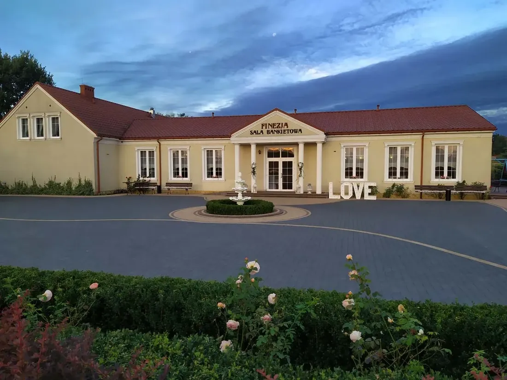

Kaczki Średnie · 4 km od Turku
Sala weselna i bankietowa Finezja
Wesela, osiemnastki, komunie i przyjęcia firmowe od 2010 roku. Jedno przyjęcie dziennie, kuchnia na miejscu, zabawa do rana z dala od zabudowań.
Sala
Jasne wnętrze, które dopasujemy do Waszego przyjęcia
Wysokie okna, kryształowe żyrandole, lustrzany sufit z oświetleniem LED i białe pokrowce na krzesłach. Wnętrze jest spokojnym tłem – tak samo dobrze wygląda wesele w stylu glamour, boho, jak i elegancka komunia.
Układ stołów, dekoracje i światło ustalamy pod okazję i liczbę gości. Sala jest klimatyzowana, ma wentylację mechaniczną, osobne wejście dla gości i miejsce na słodki stół, drink bar czy fotobudkę.

Kuchnia
Gotujemy na miejscu, nie wozimy cateringu z zewnątrz
Każde danie powstaje w naszej kuchni – ze świeżych, w większości lokalnych składników. Torty na śmietanie i lodowe, ciasta domowe i monoporcje na słodki stół też robimy sami, więc tort nie jedzie w upale.
Menu układamy razem z Wami: klasyka kuchni polskiej dla rodziców i dziadków obok nowocześniejszych dań dla młodszych gości. Dania wegetariańskie, wegańskie, bezglutenowe i bez laktozy przygotowujemy jako pełnowartościowe posiłki.

Oferta
Na jaką okazję szukasz sali?
Każde przyjęcie przygotowujemy od nowa: menu, ustawienie stołów, dekoracje i przebieg wieczoru.

Wesele
Od 60 do 160 gości, jedno wesele dziennie, menu z własnej kuchni i koordynator od podpisania umowy do ostatniego tańca.

Osiemnastka i urodziny
Sala na wyłączność, parkiet, DJ, tort z fontannami iskier. Roczek, 18-tka, 30, 40, 50, 60 i 70 lat.

Komunia i chrzciny
Rodzinne przyjęcie w jasnej sali, menu dla dorosłych i dzieci, dekoracje dopasowane do uroczystości.

Spotkania firmowe
Bankiety, wigilie firmowe, szkolenia i integracje – z fakturą, obsługą i menu ustalonym pod grupę.

Konsolacja
Spokojne miejsce na spotkanie po pogrzebie. Obiad, kawa, ciasto – ustalamy wszystko w jednej rozmowie.

Catering na wynos
Dania z tej samej kuchni co na weselach – od 5 do 100 osób. Menu 2026 z cenami i zamówieniem online.
Najbliższe wydarzenie
Bal Andrzejkowy 2026
Ostatnia wielka zabawa przed świętami. Kolacja serwowana do stołu, bufet przez całą noc, drugie ciepłe danie po północy i DJ-konferansjer do czwartej rano. Przyjeżdżają pary, grupy znajomych i całe zespoły z pracy.


Dojazd i noclegi
Cisza wokół sali, Turek kilka minut samochodem
Sala stoi z dala od zabudowań, więc zabawa trwa do rana bez ściszania muzyki. Przed budynkiem jest bezpłatny parking, a wokół zieleń – miejsce na zdjęcia i przerwę na świeżym powietrzu.
| Turek | 4 km, ok. 10 minut do kościołów i USC |
|---|---|
| Konin, Koło | dojazd drogą DK92 bez przesiadek |
| Kalisz | niecała godzina samochodem |
| Noclegi | ok. 48 miejsc: w sali, w Barze Kaczki Średnie za ścianą i w Lawendowej Willi |
Opinie gości
Co piszą o nas po przyjęciu
Ocena „doskonała” na podstawie 300 opinii w Google. Wszystkie opinie
„Organizowałam tu wesele syna, ponieważ urzekł mnie klimat tego miejsca i fantastyczna obsługa. Największym potwierdzeniem doskonałego wyboru były zachwyty gości nad podanymi daniami.”
„Robiliśmy u Państwa niejedną imprezę i jak zawsze jesteśmy bardzo zadowoleni. Jedzenie przepyszne, dużo i te wasze devolaje. Z cateringu również jesteśmy zadowoleni – przede wszystkim ciepły.”
„Pozytywna opinia z osiemnastki mojej córki. Jedzenie było przepyszne, świeże, a panie w obsłudze i kuchni przemiłe. To nie była moja pierwsza impreza na tej sali i nic mnie nie zawiodło.”
Jak zacząć
Od telefonu do przyjęcia
- Dzwonisz albo piszeszPodajesz okazję, datę i przybliżoną liczbę gości. Sprawdzamy, czy termin jest wolny.
- Oglądasz salęUmawiamy wizytę – także w weekend. Pokazujemy salę, kuchnię, pokoje i parking.
- Rezerwujesz terminPodpisujemy umowę, która opisuje wszystko, co zawiera cena. Przy weselu zaliczka 1000 zł blokuje datę.
- Ustalamy menu i przebiegWybieracie dania, dekoracje i harmonogram. Przy większych przyjęciach – degustacja.
- Potwierdzamy szczegółyLiczba gości, diety, rozsadzenie, plan wieczoru z DJ-em i fotografem.
- ŚwiętujecieSala jest gotowa przed przyjazdem gości. Obsługa, sprzątanie i demontaż są po naszej stronie.
Rezerwacje i wizyty
Najlepiej zobaczyć salę na miejscu
Umów się na wizytę – pokażemy salę, kuchnię, pokoje i parking, a przy okazji opowiemy, jak wyglądają przyjęcia u nas. Spotkania także w weekend.
| Telefon | 665 188 619 · 601 637 397 |
|---|---|
| biuro@finezja.org | |
| Adres | Kaczki Średnie 10c, 62-700 Turek |